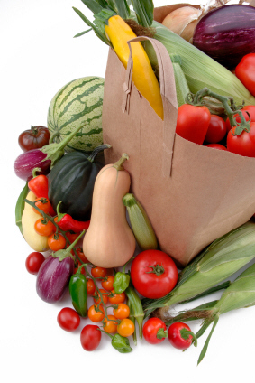

Saving Money on Groceries: An Insider's Guide to Smart Shopping
With bank-accounts shriveling all over the U.S., now's a good time to make saving money on groceries a weekly reality.
If you've tightened
your budget belt and are looking for ways to stretch a dime, learning how to power shop your groceries is the best way to trim the fat in your
frugal grocery shopping experience.
Speaking from experience, it will save you hundreds every month.
In researching grocery shopping on a budget, I stumbled upon a power-shopping e-course. I followed the suggestions...and was shocked
at the results.
Let's just say that these discount grocery shopping steps are now non-negotiable. In fact, it's become somewhat of a family joke.
Since impressing my husband in those first few weeks with freebies and awesome discounts (90% off) he's been asking me "Can you get THAT for
free?" (Seriously, he asks this about infant Tylenol, diapers, car wax, dog food...)
My reply? Just give this Super-Mom some time... Now,
if only there was a "free college tuition" coupon...
Saving Money on Groceries: Learning How to Power Shop
Of all the "recommendations" I've followed in saving money on groceries over the years, learning to power shop has
most dollar-for-dollar impacton my grocery shopping on a budget.
I'd heard rumors about people who could fill a
grocery cart and walk out under $50, but I always shrugged them off as old wives' tales. Could it be that those people truly exist?
I needed some training. I also needed simplicity. I do NOT have the time, nor the patience, to clip thousands of coupons and stuff them
in a box for "eventual" savings. (Honestly, what mother of young children has time for that?)
Into that dilemma stepped Daniel Pereira. He became (and still is) my grocery-hero. He wrote an ebook entited Saving Money Through Power Shopping.
What is an E-book?
An e-book (or eBook) is an electronic book. You make a purchase, and the vendor gives you a special Internet link.
You click on the link (or right
click, depending on the instructions) and save the book on your computer.
You are then free to read it on your computer, or print
it off and read it like a book (my personal preference).
I followed the book's suggestions...and my budget will never be the same. Here's why.
My first emotion was skepticism. The title on the home page read: "How to immediately save 40-70% on your grocery bill!"
Isn't that what they all say? I thought to myself. Still, as I continued to read the rest of the page, I started to think that actually
this Daniel-guy may actually know what he's talking about. Then I saw the eBook's price, and my jaw hit the floor.
I plunged in, and placed an order. Shelling out a whopping 7 bucks.
Side Note: Why is it only $7? I personally emailed Daniel this question. His response was, "In this
economy, people need this information more than ever." Who am I to complain? My family can certainly use the discount.
So I skipped a few lattes and ordered a "power shopping eBook". What did I have to lose? (Besides the two lattes, of course.)
Not only was I able to download and read it right away, I also received several other interesting bonus ebooks about
saving and making money. As an extra cherry on top, Daniel sent me an email listing 12 of the "best buys" and grocery freebies he had found for that week.
It was a great start!
Saving Money on Groceries: What Impressed Me
Daniel's Real Expertise
Daniel isn't just a person who grocery shops. As I read through the 113-page document, it became apparent that Daniel had professional power shopping
experience in saving money on groceries.
The tips he shares aren't of your garden-variety "Sunday paper" variety. No, we're talking websites, databases, spreadsheets, all
letting you find the best deals within a few clicks.
As I was learning, there were a few instances where I felt I needed additional clarification. I emailed Daniel, and within 24 hours he had
written back with answers. Such personal attention was unexpected.
Since I had only paid $7, I assumed (wrongly) that my questions wouldn't
be worth his response. It was impressive to see an author willing to back up his work.
Honesty is the Best Policy
Another thing I appreciated about the eBook was its honesty. Daniel was very deliberate in pointing out he did not "endorse" any of the
websites he suggests as resources. At first I found this annoying (why suggest them in the first place?), but once I visited the site,
I understood completely.
In one of the discount grocery shopping coupon sites he mentions, you have to click "skip" about 10 times to avoid signing up for so-called
"free" surveys, and ads. However, once you skip all those, the site is golden. Once you've set up your account, you never have to go
through that again.
In hindsight, I appreciated the effort he made to warn me about
those ads, encouraging me to push through them and set up an account.
He's also not strictly loyal to any one site. He gives you a handful, then rates them. For example, he'll say "Go to site X. If you can't find
your local grocery store there, try Site Y. If you can't find your store there, go to Site Z." I appreciated this a lot. For people
who don't live in mainstream areas, this information is priceless.

All My Questions Answered
Along with an initial skepticism, I had a few specific questions I was looking for answers to.
Will I have to clip hundreds of coupons each Sunday? (This was an automatic deal-breaker.)
Will I have to get a membership to Cosco or Sam's Club? (He actually convinced me that shopping wholesale costs more.)
How can I be sure I'm getting the best price? (He provides an Excell spreadsheet of what prices are considered "best" for items, including
baby products. This is helpful in figuring out if a sale price is actually the best price.)
Information, Information, Information
In the first few chapters, Daniel explains the inter-workings of the grocery industry. How they do their pricing and structure their sales. This
information really helped me see their "sales" through fresh eyes. I'm no longer a naive shopper.
To add an exclamation point to his suggestions, he also includes a hyperlink to videos that show, in real life, how saving money on groceries
through power shopping is actually lived out.
From
a trip to Wal-mart, to screen shots of him exploring databases online, the videos were tremendously helpful in learning the concepts and
putting them into practice.
The chapter "Ten Items You Should Never Pay For" was eye-popping. It showed that I should never really have to pay for shampoo,
razors, deodorant, gum, etc... Under each item he details how to always get those items (and others) for free.
Saving Money on Groceries A Word to the Wise
As much as I loved this ebook, I would be a liar if I recommended it to everybody. Nothing on earth is perfect, and this ebook is no exception.
However, considering the length and volume of information found here, my list of "cautions" is surprisingly small.
The Learning Curve
As with anything you learn for the first time, expect to spend some time wrapping your mind around the power shopping concept. I read
the book a few times, taking notes to solidify this new shopping paradigm shift.
In order to follow the power-shopping system exactly, you're going to need to make some initial phone calls
and open some free online accounts. These things may take time to be set up. A rhythm will have to be established.
Give yourself a month grace period to really understand and implement the program correctly before casting any judgements. Once you get into the
groove, it will take less and less time and will save you more and more money.
If you expect this learning curve from the get-go, you'll be more likely to follow his suggestions, making saving money on groceries an inevitable event.
Spatial Relations
Much of this experience in saving money on groceries involves buying multiple items at deep discounts (80% and up) or even free. This requires an area for you to stock those items until
you need them. (Daniel recommends keeping a 3 month supply.)
If you're a family of four living in a 600 square-foot apartment, your ability to follow the program may be limited.
Since my kitchen isn't celebrity-sized, I was forced to set up my "alternate" pantry in our basement. I'm surprised at how much I've liked this
new arrangement. All "extras" are kept in the same place, so I know right where to look before I go out to restock.
Saving Money on Groceries: Oh! Sweet Savings Divine!
I'm happy to report that by using this ebook, I am saving money on groceries every week. During my first grocery shopping trip, I saved over 20% off my bill (with
no coupons clipped).
In my first month, my total savings was $98.60. I expect this will only increase. Why do I think so?
I purchased or obtained several items my family will be using for months to come. Since I purchased on sale, I won't have to purchase
full price later on when I need kleenex, diapers, dog food, toothpaste...
Daniel's system of "smart coupons" gives me the date and page numbers of the coupons I can use that week. (No clipping
thousands every week and then trying to "remember" when to use them!) The more circulars I have on file,
the better savings I'll have in the future.
In conclusion, if saving money on groceries is one of your budget goals, this $7 ebook is a must have.
Side Note: Another great saving money on groceries tip is to meal plan. Meal planning doesn't have to
be stressful. In fact, it can be done in only minutes every week. If you don't have a meal plan this easy, check out my steps to meal planning nirvana.
ADD TO YOUR SOCIAL BOOKMARKS:BlinkDel.icio.usDigg FurlGoogleSimpySpurlTechnoratiY! MyWeb